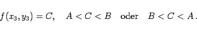

Inhalt Index DeskTop Bronstein

 Funktionen und ihre Darstellung Funktionen von mehreren Veränderlichen Eigenschaften stetiger Funktionen
Funktionen und ihre Darstellung Funktionen von mehreren Veränderlichen Eigenschaften stetiger Funktionen


Wenn eine Funktion f(x,y) in einem zusammenhängenden Gebiet definiert und stetig ist und wenn sie in zwei Punkten (x1,y1) und (x2,y2) verschiedene Werte A=f(x1,y1) und B=f(x2,y2) annimmt, dann gibt es für jede Zahl C, die zwischen A und B liegt, einen Punkt (x3,y3) derart, daß gilt:
|  | (2.281) |